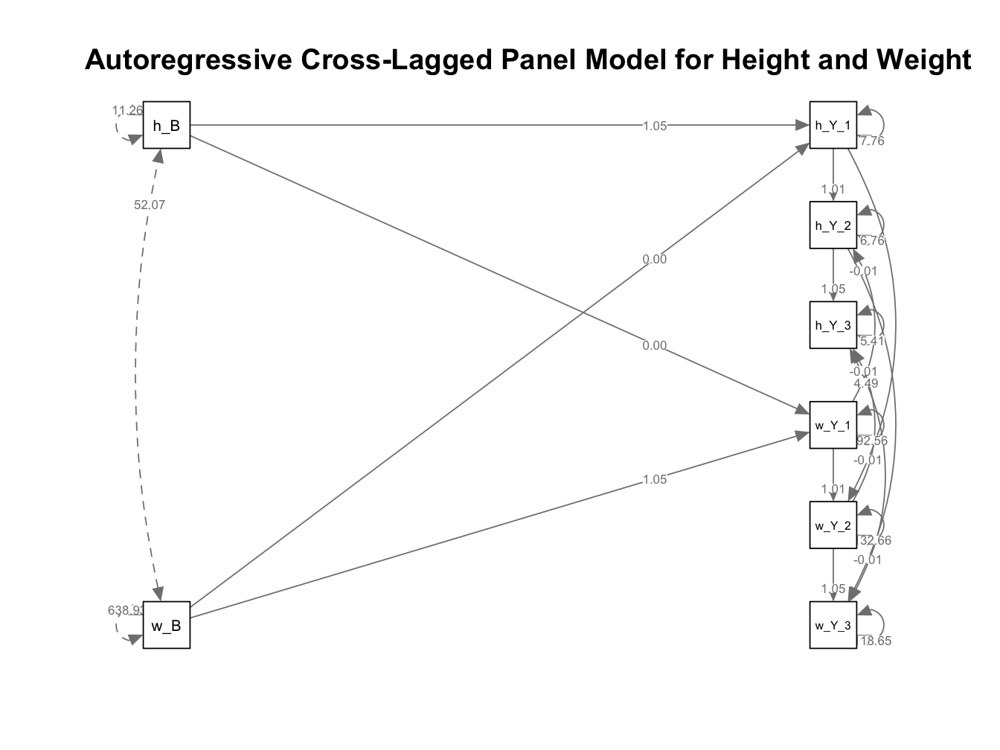

Autoregressive Crosslagged Panel Models
Overview
Autoregressive Cross-Lagged Panel Analysis (ARCL) is a statistical technique used to examine the reciprocal relationships between variables over time. This method incorporates both autoregressive paths, which account for the stability of each variable across time points, and cross-lagged paths, which assess the influence of one variable on another over subsequent time points.
This example will examine the height and weight across 3 annual measurement occasions in a sample of youth taking part in the ABCD Study. The primary aim is to explore the reciprocal relationships between height and weight at different time points, analyzing how height at one time point predicts weight at future time points (and vice-versa). ARCL will be used to model both the stability of height and weight over time (autoregressive paths) and the potential cross-lagged influences between consecutive measurements of these two constructs.
Preliminary Setup
Load R libraries
Descriptives
Code
descriptives_table <- df_long %>%
select(event, height, weight) %>%
mutate(event = factor(event)) %>%
tbl_summary(
by = event,
missing = "no",
label = list(height ~ "Height", weight ~ "Weight"),
statistic = list(all_continuous() ~ "{mean} ({sd}) )", all_categorical() ~ "{p}%"),
) %>%
modify_header(all_stat_cols() ~ "**{level}**<br>N = {n}") %>%
bold_labels() %>%
italicize_levels() %>%
modify_spanning_header(all_stat_cols() ~ "**Assessment Wave**")
theme_gtsummary_compact()
descriptives_table| Characteristic | Assessment Wave | |||
|---|---|---|---|---|
| Baseline N = 18031 |
Year_1 N = 18031 |
Year_2 N = 18031 |
Year_3 N = 18031 |
|
| Height | 55.3 (3.4) ) | 57.7 (3.8) ) | 60.2 (3.5) ) | 62.4 (3.8) ) |
| Weight | 83 (25) ) | 96 (31) ) | 110 (35) ) | 123 (39) ) |
| 1 Mean (SD) ) | ||||
Results
Compute Autoregressive Crosslagged Panel Analysis
This code performs an Autoregressive Cross-Lagged Panel Analysis (ARCL) to examine the reciprocal relationships between ‘Height’ and ‘Weight’ measurements across 3 annual visits. The model output is provided below, along with a summary of results. This approach models both the stability of height and weight over time (autoregressive paths) and the potential cross-lagged effects between these constructs.
Code
# Reshape data from long to wide format
df_wide <- df_long %>%
pivot_wider(
id_cols = c(id),
names_from = event,
values_from = c(height, weight),
names_sep = "_"
)
df_wide <- na.omit(df_wide)
model <- "
# Autoregressive paths
weight_Year_3 ~ a2 * weight_Year_2
weight_Year_2 ~ a1 * weight_Year_1
weight_Year_1 ~ a2 * weight_Baseline
height_Year_3 ~ a2 * height_Year_2
height_Year_2 ~ a1 * height_Year_1
height_Year_1 ~ a2 * height_Baseline
# Cross-lagged paths
height_Year_3 ~ b1 * weight_Year_2
height_Year_2 ~ b1 * weight_Year_1
height_Year_1 ~ b2 * weight_Baseline
weight_Year_3 ~ b1 * height_Year_2
weight_Year_2 ~ b1 * height_Year_1
weight_Year_1 ~ b2 * height_Baseline
"
# Fit the model to your data (replace 'your_data' with the name of your data frame)
fit <- sem(model, data = df_wide)
# View the results
summary(fit)lavaan 0.6.16 ended normally after 30 iterations
Estimator ML
Optimization method NLMINB
Number of model parameters 19
Number of equality constraints 8
Number of observations 1803
Model Test User Model:
Test statistic 2141.750
Degrees of freedom 22
P-value (Chi-square) 0.000
Parameter Estimates:
Standard errors Standard
Information Expected
Information saturated (h1) model Structured
Regressions:
Estimate Std.Err z-value P(>|z|)
weight_Year_3 ~
wght_Yr_2 (a2) 1.050 0.005 200.487 0.000
weight_Year_2 ~
wght_Yr_1 (a1) 1.011 0.008 126.796 0.000
weight_Year_1 ~
wght_Bsln (a2) 1.050 0.005 200.487 0.000
height_Year_3 ~
hght_Yr_2 (a2) 1.050 0.005 200.487 0.000
height_Year_2 ~
hght_Yr_1 (a1) 1.011 0.008 126.796 0.000
height_Year_1 ~
hght_Bsln (a2) 1.050 0.005 200.487 0.000
height_Year_3 ~
wght_Yr_2 (b1) -0.007 0.001 -4.938 0.000
height_Year_2 ~
wght_Yr_1 (b1) -0.007 0.001 -4.938 0.000
height_Year_1 ~
wght_Bsln (b2) 0.001 0.003 0.220 0.826
weight_Year_3 ~
hght_Yr_2 (b1) -0.007 0.001 -4.938 0.000
weight_Year_2 ~
hght_Yr_1 (b1) -0.007 0.001 -4.938 0.000
weight_Year_1 ~
hght_Bsln (b2) 0.001 0.003 0.220 0.826
Covariances:
Estimate Std.Err z-value P(>|z|)
.weight_Year_3 ~~
.height_Year_3 4.492 0.606 7.410 0.000
Variances:
Estimate Std.Err z-value P(>|z|)
.weight_Year_3 118.650 3.952 30.025 0.000
.weight_Year_2 132.658 4.418 30.025 0.000
.weight_Year_1 92.563 3.083 30.025 0.000
.height_Year_3 5.414 0.180 30.025 0.000
.height_Year_2 6.763 0.225 30.025 0.000
.height_Year_1 7.758 0.258 30.025 0.000These results show significant autoregressive effects for both height and weight, indicating that measurements at each time point strongly predict subsequent measurements (e.g., height at Year 2 significantly predicts height at Year 3 with an estimate of 1.05, p < .001). The cross-lagged effects indicate a small but significant negative influence of weight on height at later time points (e.g., weight at Year 2 negatively affects height at Year 3 with an estimate of -0.007, p < .001). The covariances between height and weight at Year 3 are also significant, suggesting a relationship between these variables at the final time point.
Model Plots
Code
# Fit and plot the model with adjusted label positions and curved edges
# Assume 'fit' is your fitted SEM model
semPlotObj <- semPaths(
fit,
whatLabels = "est", # Show estimated coefficients
edge.label.cex = 0.6, # Smaller font size for edge labels
layout = "tree",
rotation = 2,
edge.label.position = 0.75, # Moves labels closer to the destination node
edge.curve = 0.3, # Increase curvature to separate labels from the path
)
# Adding a title using base R graphics functions
title(main = "Autoregressive Cross-Lagged Panel Model for Height and Weight")
From To Weight
2 --> 1 1
3 --> 2 1
7 --> 3 1
5 --> 4 1
6 --> 5 1
8 --> 6 1
2 --> 4 1
3 --> 5 1
7 --> 6 1
5 --> 1 1
6 --> 2 1
8 --> 3 1
1 <-> 1 1
2 <-> 2 1
3 <-> 3 1
4 <-> 4 1
5 <-> 5 1
6 <-> 6 1
1 <-> 4 1
7 <-> 7 1
7 <-> 8 1
8 <-> 8 1
4 <-> 1 1
8 <-> 7 1 NULLThis plot illustrates the autoregressive cross-lagged panel model for height and weight across 3 annual measurement occasions. The model includes both autoregressive paths (predicting a variable from its previous time point) and cross-lagged paths (predicting a variable from the other variable at a previous time point).
The autoregressive paths show that height and weight at each time point strongly predict their respective values at subsequent time points. For example, height at Year 2 significantly predicts height at Year 3. These paths are indicated by curved lines connecting each time point for height and weight, with coefficients showing the strength of these predictions.
The cross-lagged paths reveal how height and weight influence each other over time. For instance, weight at Year 2 negatively affects height at Year 3, as indicated by the coefficients on the curved paths connecting weight at one time point to height at the next.
The overall model highlights the strong stability of height and weight over time (autoregressive effects) and the modest influence of weight on height and vice versa (cross-lagged effects). This plot helps visualize the dynamic interplay between height and weight, providing insights into how these variables evolve together over time.
Wrapping Up
The autoregressive cross-lagged panel model analysis revealed significant relationships between children’s height and weight measured over 3 annual assessments. The model showed strong autoregressive effects, indicating that height and weight measurements at each time point strongly predict their subsequent measurements. For example, height at Year 2 significantly predicts height at Year 3 with an estimate of 1.05 (p < .001).
Additionally, the cross-lagged effects revealed a small but significant negative influence of weight on height at later time points. Specifically, weight at Year 2 negatively affects height at Year 3 with an estimate of -0.007 (p < .001). The significant covariances between height and weight at Year 3 suggest a relationship between these variables at the final time point.
The autoregressive cross-lagged panel model framework used in this example demonstrated its utility in capturing both the stability of measurements over time and the dynamic interplay between height and weight. This approach is particularly useful in developmental studies, as it allows for the examination of reciprocal influences between variables over time, providing a comprehensive understanding of the growth trajectories and their interdependencies.
More generally, this method is valuable for understanding both individual-specific trajectories and the relationships between multiple developmental indicators in longitudinal data. By accounting for the autoregressive and cross-lagged effects, this model offers a nuanced perspective on how different aspects of growth interact and influence each other over time.